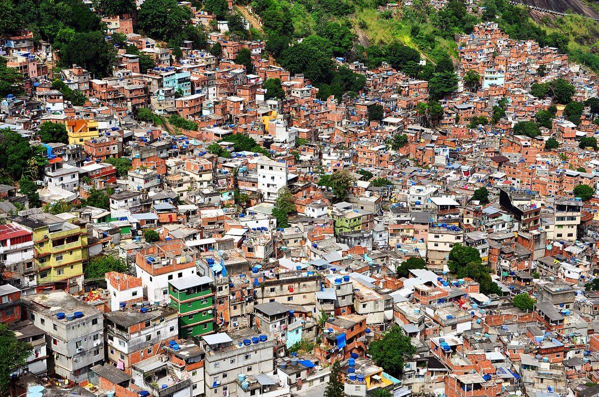

<!doctype html>
<html lang="fr">
<head>
<meta charset="utf-8">
<meta name="viewport" content="width=device-width, initial-scale=1">
<title>La cartographe disparue</title>
<meta name="description" content="Parcours de révision en escape game, la métropolisation, géographie 1re, Lycée français Victor Hugo de Sofia. LaClasseDeGreg.">
<link rel="preconnect" href="https://fonts.googleapis.com">
<link rel="preconnect" href="https://fonts.gstatic.com" crossorigin>
<link href="https://fonts.googleapis.com/css2?family=Atkinson+Hyperlegible:wght@400;700&family=Caveat:wght@500;700&family=Fraunces:opsz,wght@9..144,600;9..144,800&display=swap" rel="stylesheet">
<style>
:root{--night:#0b1030;--night2:#141a44;--ink:#e9ecff;--muted:#a9b0dc;--paper:#f7f0e1;--paper2:#efe4cc;--pink:#ff2bd6;--green:#39ff14;--blue:#00e5ff;--red:#C8102E;--navy:#16256B;--gold:#f5c542;--ok:#1f8a4c;--ko:#b3122e;
  --serif:"Fraunces",Georgia,serif;--hand:"Caveat","Segoe Print",cursive;--sans:"Atkinson Hyperlegible",system-ui,-apple-system,"Segoe UI",sans-serif}
*{box-sizing:border-box}
html{-webkit-text-size-adjust:100%}
body{margin:0;background:var(--night);color:var(--ink);font:17px/1.55 var(--sans);
  background-image:linear-gradient(rgba(0,229,255,.05) 1px,transparent 1px),linear-gradient(90deg,rgba(0,229,255,.05) 1px,transparent 1px);background-size:44px 44px;min-height:100vh}
body.easy{font-size:20px;line-height:1.8;letter-spacing:.02em;word-spacing:.08em}
body.easy .hand{font-family:var(--sans);font-size:1em}
a{color:var(--blue)}
button{font:inherit;cursor:pointer}
:focus-visible{outline:3px solid var(--gold);outline-offset:2px}
.wrap{max-width:880px;margin:0 auto;padding:18px 16px 70px}
/* barre du haut */
#hud{position:sticky;top:0;z-index:20;background:rgba(11,16,48,.94);backdrop-filter:blur(6px);border-bottom:1px solid rgba(255,255,255,.1)}
#hud .in{max-width:880px;margin:0 auto;padding:8px 16px;display:flex;gap:8px;align-items:center;flex-wrap:wrap}
.code{display:flex;gap:4px}
.code span{width:30px;height:34px;border-radius:6px;border:1.5px dashed rgba(255,255,255,.3);display:grid;place-items:center;font:800 18px var(--serif);color:transparent}
.code span.got{border:1.5px solid var(--gold);color:var(--gold);background:rgba(245,197,66,.12)}
.code span.tache{border-color:#c98a4a;color:#e0a46a}
.hudsp{flex:1}
.chip{border:1px solid rgba(255,255,255,.25);background:transparent;color:var(--ink);border-radius:999px;padding:5px 12px;font-size:14px}
.chip[aria-pressed="true"]{background:var(--ink);color:var(--night)}
.chip.cours{border-color:var(--blue);color:var(--blue);animation:glowB 1.6s ease-in-out infinite}
.clock{font-variant-numeric:tabular-nums;color:var(--muted);font-size:14px}
/* écrans */
.hero{min-height:calc(100vh - 54px);display:grid;place-items:center;text-align:center;padding:30px 16px;
  background:linear-gradient(180deg,rgba(11,16,48,.35),rgba(11,16,48,.92)),url(img/hero.jpg) center/cover}
.hero h1{font:800 clamp(38px,8vw,72px)/1.02 var(--serif);margin:.2em 0;letter-spacing:-.01em}
.hero .kick{font:700 14px var(--sans);letter-spacing:.18em;text-transform:uppercase;color:var(--gold)}
.hero p.lede{max-width:620px;margin:10px auto 22px;color:#d6dbff;font-size:19px}
.cta{background:var(--red);color:#fff;border:0;border-radius:12px;padding:14px 26px;font:700 18px var(--sans);box-shadow:0 0 0 0 rgba(200,16,46,.6);animation:pulseR 2.2s infinite}
.cta:disabled{opacity:.45;animation:none;cursor:not-allowed}
.ghost{background:transparent;color:var(--ink);border:1px solid rgba(255,255,255,.35);border-radius:12px;padding:10px 18px;margin:6px}
.btn{background:var(--navy);color:#fff;border:1px solid rgba(255,255,255,.2);border-radius:10px;padding:10px 18px;font-weight:700}
.btn.alt{background:transparent;color:var(--ink)}
.sheet{background:var(--paper);color:#1d1b16;border-radius:14px;padding:22px 22px 20px;box-shadow:0 14px 40px rgba(0,0,0,.45);position:relative}
.sheet h2{font:800 28px/1.15 var(--serif);margin:.1em 0 .4em;color:var(--navy)}
.sheet h3{font:700 19px var(--sans);color:var(--red);margin:1.2em 0 .4em}
.meta{font:700 13px var(--sans);letter-spacing:.14em;text-transform:uppercase;color:var(--red);margin:0}
.hand{font-family:var(--hand);font-size:1.45em;line-height:1.25;color:#2a2a63}
.note{background:var(--paper2);border-left:5px solid var(--navy);padding:12px 14px;border-radius:0 10px 10px 0;margin:12px 0}
.note.gold{border-color:#c99a06;background:#fff4cf}
.note.pink{border-color:var(--pink)}
.muted{color:var(--muted)}
.sheet .muted{color:#6c6658}
.act{display:flex;gap:10px;flex-wrap:wrap;margin-top:18px}
.photo{margin:14px -22px;position:relative}
.photo img{display:block;width:100%;height:auto;max-height:340px;object-fit:cover}
.photo figcaption{font-size:12.5px;color:#6c6658;padding:6px 22px 0}
.notions{display:grid;grid-template-columns:repeat(auto-fit,minmax(220px,1fr));gap:8px;margin-top:8px}
.notions div{background:#fff;border:1px solid #e3d8bd;border-radius:10px;padding:8px 10px;font-size:15px}
.notions b{color:var(--navy)}
/* liens fluo */
.lk{display:inline-flex;align-items:center;gap:8px;text-decoration:none;font-weight:700;border-radius:999px;padding:8px 14px;margin:4px 6px 4px 0;background:#111538;border:2px solid}
.lk.video{color:var(--pink);border-color:var(--pink);animation:glowP 1.4s ease-in-out infinite}
.lk.jeu{color:var(--green);border-color:var(--green);animation:glowG 1.4s ease-in-out infinite}
.lk.dl{color:var(--blue);border-color:var(--blue);animation:glowB 1.4s ease-in-out infinite}
.lk svg{width:18px;height:18px;flex:none}
@keyframes glowP{50%{box-shadow:0 0 18px 3px rgba(255,43,214,.75);filter:brightness(1.35)}}
@keyframes glowG{50%{box-shadow:0 0 18px 3px rgba(57,255,20,.7);filter:brightness(1.3)}}
@keyframes glowB{50%{box-shadow:0 0 18px 3px rgba(0,229,255,.7);filter:brightness(1.3)}}
@keyframes pulseR{70%{box-shadow:0 0 0 16px rgba(200,16,46,0)}100%{box-shadow:0 0 0 0 rgba(200,16,46,0)}}
@media (prefers-reduced-motion:reduce){*{animation-duration:0s!important;transition:none!important}.lk{box-shadow:0 0 12px 1px currentColor}}
/* rôles */
.gender{display:flex;gap:8px;margin:10px 0 14px}
.gender button{border:1px solid rgba(255,255,255,.35);background:transparent;color:var(--ink);border-radius:999px;padding:7px 16px}
.gender button[aria-pressed="true"]{background:var(--gold);color:#221a00;border-color:var(--gold)}
.roles{display:grid;grid-template-columns:repeat(auto-fit,minmax(240px,1fr));gap:10px}
.role{display:flex;gap:12px;align-items:center;text-align:left;background:var(--night2);color:var(--ink);border:2px solid rgba(255,255,255,.12);border-radius:14px;padding:12px}
.role[aria-pressed="true"]{border-color:var(--gold);background:#1e2560}
.role .ic{width:52px;height:52px;border-radius:50%;display:grid;place-items:center;flex:none}
.role .ic svg{width:28px;height:28px}
.role b{display:block;font-size:17px}
.role small{color:var(--muted);font-size:13.5px;line-height:1.35;display:block}
label.l{display:block;font-weight:700;margin:0 0 6px}
select.f,input.f{font:inherit;background:#fff;color:#111;border:2px solid #b9b2a0;border-radius:10px;padding:9px 12px;min-width:220px;max-width:100%}
.ident{display:flex;gap:14px;flex-wrap:wrap;align-items:flex-end;margin-top:18px}
/* étape */
.stagehead{display:flex;align-items:center;gap:14px;margin:4px 0 12px}
.bigletter{width:64px;height:72px;border-radius:12px;background:var(--navy);color:var(--gold);display:grid;place-items:center;font:800 40px var(--serif);flex:none;box-shadow:0 0 0 3px var(--gold) inset}
.stagehead h2{margin:0}
.counter{display:grid;grid-template-columns:repeat(auto-fit,minmax(150px,1fr));gap:10px;margin:12px 0}
.counter div{background:var(--navy);color:#fff;border-radius:12px;padding:12px;text-align:center}
.counter b{display:block;font:800 30px var(--serif);color:var(--gold)}
.counter span{font-size:13.5px;color:#cfd5ff}
.rank{position:relative;height:calc(9 * 38px);margin:10px 0}
.rank .row{position:absolute;left:0;right:0;height:32px;display:flex;align-items:center;gap:10px;transition:transform .9s cubic-bezier(.6,.05,.3,1),opacity .5s}
.rank .row i{font-style:normal;width:30px;text-align:right;font-weight:700;color:var(--navy)}
.rank .row span{flex:1;background:#fff;border:1px solid #ddd2b8;border-radius:8px;padding:4px 10px;font-weight:700;display:flex;justify-content:space-between}
.rank .row.both span{border:2px solid var(--red);background:#ffe9ec}
.rank .row em{font-style:normal;font-weight:400;color:#6c6658;font-size:13.5px}
.tabs2{display:flex;gap:8px;flex-wrap:wrap}
.tabs2 button{border:2px solid var(--navy);background:#fff;color:var(--navy);border-radius:999px;padding:6px 14px;font-weight:700}
.tabs2 button[aria-pressed="true"]{background:var(--navy);color:#fff}
svg.map{width:100%;height:auto;background:#e8eef6;border-radius:12px;display:block}
.map .draw{stroke-dasharray:1000;stroke-dashoffset:1000;animation:draw 3.2s .3s forwards ease-in-out}
@keyframes draw{to{stroke-dashoffset:0}}
.map .city{cursor:pointer}.map .city:focus{outline:none}.map .city:focus-visible circle{stroke:var(--gold);stroke-width:4}
.map .city circle{transition:r .25s}
.map .city:hover circle,.map .city.on circle{stroke:var(--red);stroke-width:3}
.pulse{animation:pulseA 2s infinite}
@keyframes pulseA{50%{opacity:.35}}
.info{min-height:52px;background:#fff;border:1px solid #ddd2b8;border-radius:10px;padding:10px 12px;margin-top:8px;font-size:15.5px}
.frise{display:grid;grid-template-columns:repeat(4,1fr);gap:6px;margin:10px 0}
.frise button{background:#fff;border:2px solid var(--navy);color:var(--navy);border-radius:10px;padding:8px 4px;font-weight:700;font-size:14px}
.frise button[aria-pressed="true"]{background:var(--navy);color:#fff}
.hot{position:relative}
.hot img{display:block;width:100%;border-radius:12px}
.hot button{position:absolute;width:30px;height:30px;margin:-15px 0 0 -15px;border-radius:50%;border:3px solid #fff;background:var(--red);color:#fff;font-weight:800;font-size:14px;box-shadow:0 0 0 0 rgba(200,16,46,.7);animation:pulseR 1.8s infinite}
.hot button[aria-pressed="true"]{background:var(--navy)}
/* questions */
.qhead{display:flex;justify-content:space-between;align-items:center;gap:10px}
.dots{display:flex;gap:5px}.dots i{width:12px;height:12px;border-radius:50%;background:#d8ccb0}.dots i.ok{background:var(--ok)}.dots i.ko{background:#d08a3c}.dots i.cur{outline:2px solid var(--navy)}
.q{font-weight:700;font-size:1.08em;margin:10px 0 12px}
.opts{display:grid;gap:8px}
.opt{text-align:left;background:#fff;border:2px solid #d8ccb0;border-radius:12px;padding:11px 14px;color:#1d1b16}
.opt:hover:not(:disabled){border-color:var(--navy)}
.opt.good{border-color:var(--ok);background:#e6f5ec}
.opt.bad{border-color:var(--ko);background:#fbe6ea}
.opt:disabled{cursor:default}
.trous{background:#fff;border-radius:12px;padding:14px;border:1px solid #e0d5bb;line-height:2.3}
.trous select{font:inherit;font-weight:700;border:2px solid var(--navy);border-radius:8px;padding:2px 6px;background:#f4f6ff;max-width:100%}
.trous select.good,.assoc select.good{border-color:var(--ok);background:#e6f5ec}
.trous select.bad,.assoc select.bad{border-color:var(--ko);background:#fbe6ea}
.assoc{display:grid;gap:8px}
.assoc div{display:grid;grid-template-columns:minmax(120px,1fr) minmax(150px,1.4fr);gap:8px;align-items:center;background:#fff;border:1px solid #e0d5bb;border-radius:10px;padding:8px 10px}
.assoc select{font:inherit;border:2px solid var(--navy);border-radius:8px;padding:6px;width:100%;background:#f4f6ff}
.fb{border-radius:12px;padding:12px 14px;margin-top:14px}
.fb.ok{background:#e6f5ec;border:2px solid var(--ok)}
.fb.ko{background:#fff1e0;border:2px solid #d08a3c}
.fb b.t{display:block;margin-bottom:4px}
/* page gagnée */
.page{background:var(--paper);background-image:repeating-linear-gradient(transparent 0 31px,#d9cdb2 31px 32px);color:#1d1b16;border-radius:6px;padding:24px 24px 20px 60px;position:relative;box-shadow:0 14px 40px rgba(0,0,0,.45);transform:rotate(-.6deg)}
.page:before{content:"";position:absolute;left:40px;top:0;bottom:0;width:2px;background:#e48a8a}
.page.tache:after{content:"";position:absolute;right:30px;top:40px;width:120px;height:90px;border-radius:50% 40% 55% 45%;background:radial-gradient(circle at 40% 40%,rgba(140,90,40,.35),rgba(140,90,40,.12) 60%,transparent 70%)}
.stamp{display:inline-grid;place-items:center;width:96px;height:96px;border-radius:50%;border:5px solid var(--red);color:var(--red);font:800 52px var(--serif);transform:rotate(-8deg);animation:stamp .5s cubic-bezier(.2,1.6,.5,1)}
@keyframes stamp{from{transform:scale(2.2) rotate(-25deg);opacity:0}to{transform:scale(1) rotate(-8deg);opacity:1}}
.clue{background:#fff;border:2px dashed var(--navy);border-radius:10px;padding:10px 12px;margin:12px 0}
/* suspects */
.sus{display:grid;grid-template-columns:repeat(auto-fit,minmax(190px,1fr));gap:10px}
.su{background:#fff;border:2px solid #d8ccb0;border-radius:14px;padding:12px;text-align:left;color:#1d1b16}
.su[aria-pressed="true"]{border-color:var(--red);background:#fff0f2}
.su .av{width:46px;height:46px;border-radius:50%;display:grid;place-items:center;color:#fff;font:800 18px var(--serif);margin-bottom:6px}
.su b{display:block}
.su small{display:block;color:#6c6658;line-height:1.35}
/* bilan */
.score{display:grid;grid-template-columns:repeat(auto-fit,minmax(150px,1fr));gap:10px;margin:14px 0}
.score div{background:var(--navy);color:#fff;border-radius:12px;padding:12px;text-align:center}
.score b{display:block;font:800 30px var(--serif);color:var(--gold)}
.errs li{margin:0 0 10px}
/* panneau cours */
dialog{border:0;border-radius:16px;padding:0;max-width:820px;width:calc(100% - 24px);background:var(--paper);color:#1d1b16}
dialog::backdrop{background:rgba(5,8,25,.75)}
dialog .in{padding:20px 22px;max-height:80vh;overflow:auto}
/* prof */
table.t{width:100%;border-collapse:collapse;font-size:14.5px}
table.t th{background:var(--navy);color:#fff;text-align:left;padding:7px 8px;white-space:nowrap}
table.t td{padding:6px 8px;border-bottom:1px solid #e3d8bd;vertical-align:top}
.tag{display:inline-block;border-radius:999px;padding:2px 10px;font-size:13px;font-weight:700}
footer.f{text-align:center;color:var(--muted);font-size:13px;padding:20px 16px 40px}
footer.f button{background:none;border:0;color:var(--muted);text-decoration:underline}
@media (max-width:560px){.sheet{padding:18px 16px}.photo{margin:12px -16px}.photo figcaption{padding:6px 16px 0}.page{padding:20px 16px 18px 46px}.page:before{left:30px}.assoc div{grid-template-columns:1fr}.frise{grid-template-columns:repeat(2,1fr)}.bigletter{width:52px;height:58px;font-size:32px}.sheet h2{font-size:24px}}
</style>
</head>
<body>
<div id="hud"></div>
<main id="app"></main>
<footer class="f">LaClasseDeGreg · Grégory Cron · Lycée français Victor Hugo de Sofia · 2026-2027<br>
  <button type="button" id="credits">Crédits des images</button> · <button type="button" id="profBtn">Espace professeur</button></footer>
<dialog id="dlg"><div class="in" id="dlgIn"></div></dialog>

<script>
"use strict";
/* ============ Réglages ============ */
const SCRIPT_URL = "https://script.google.com/macros/s/AKfycbzeHxF__BTVjSw260CTJjcOyEdMpPhejeOuHKWCEw8xbfGcR33Yobj6muOJFWY0JygE/exec";
const PREFIX = "M-"; // les parties de ce jeu sont rangées dans la même feuille que l'escape game Révolution, sous les classes M-1A, M-1B, M-Visiteurs
const STORE = "cartographe-disparue-v1";
const MUSIC = "../escape-revolution/musique/";
const COURS_PDF = "cours/Cours_1re_Geo_Metropolisation_LVH.pdf", COURS_DOCX = "cours/Cours_1re_Geo_Metropolisation_LVH.docx";
const ELEVES = {"1A": ["Karla A.", "Thibaud A.", "Alexandre B.", "Thomas C.", "Paul C.", "Pénélope D.", "Théo D.", "Ina D.", "Maraya G.", "Adrian H.", "Kristian K.", "Maria K.", "Paul K.", "Vivianne K.", "Alice L.", "Mia L.", "Elitza M.", "Boris P.", "Elsa S.", "Raya T.", "Pavel T.", "Eyango Y.", "Deyan Z."], "1B": ["Maxim B.", "Saúl B.", "Dalia D.", "Siana D.", "Aleksandar E.", "Toni G.", "Monica G.", "Ariimana I.", "Tamaterai I.", "Kaloyan J.", "Alexander K.", "Teya M.", "Dimana R.", "Daniel R.", "Ismael S.", "Philippe S.", "Daniel S.", "Noah S.", "Anna-Maria T.", "Kristina T.", "Damian Y."]};

/* ============ Icônes ============ */
const ICON = {
  video:'<svg viewBox="0 0 24 24" fill="currentColor"><path d="M8 5v14l11-7z"/></svg>',
  dl:'<svg viewBox="0 0 24 24" fill="none" stroke="currentColor" stroke-width="2.4" stroke-linecap="round"><path d="M12 4v11m-5-5 5 5 5-5M5 20h14"/></svg>',
  book:'<svg viewBox="0 0 24 24" fill="none" stroke="currentColor" stroke-width="2.2"><path d="M4 5c3-1 6-1 8 1 2-2 5-2 8-1v14c-3-1-6-1-8 1-2-2-5-2-8-1z"/><path d="M12 6v14"/></svg>',
  compass:'<svg viewBox="0 0 24 24" fill="none" stroke="currentColor" stroke-width="2"><circle cx="12" cy="12" r="9"/><path d="m15.5 8.5-2 5-5 2 2-5z" fill="currentColor"/></svg>',
  chart:'<svg viewBox="0 0 24 24" fill="none" stroke="currentColor" stroke-width="2.2" stroke-linecap="round"><path d="M4 20V10m6 10V4m6 16v-7m4 7H2"/></svg>',
  city:'<svg viewBox="0 0 24 24" fill="none" stroke="currentColor" stroke-width="2"><path d="M3 21h18M5 21V9l5-3v15M10 21V3l9 4v14M13 9h3m-3 4h3m-3 4h3"/></svg>',
  camera:'<svg viewBox="0 0 24 24" fill="none" stroke="currentColor" stroke-width="2"><path d="M4 8h3l2-3h6l2 3h3v11H4z"/><circle cx="12" cy="13" r="3.5"/></svg>',
  bike:'<svg viewBox="0 0 24 24" fill="none" stroke="currentColor" stroke-width="2"><circle cx="6" cy="16" r="4"/><circle cx="18" cy="16" r="4"/><path d="M6 16l4-7h5l3 7M10 9 8 5h3"/></svg>',
  flag:'<svg viewBox="0 0 24 24" fill="none" stroke="currentColor" stroke-width="2.2"><path d="M5 21V4m0 1h11l-2 4 2 4H5"/></svg>'
};

/* ============ Personnages ============ */
const ROLES = [
  {id:"carto", ic:"compass", col:"#2f6fd6", f:["Mila, cartographe","Elle sait lire et dessiner une carte mieux que personne."], m:["Milan, cartographe","Il sait lire et dessiner une carte mieux que personne."], bonus:2},
  {id:"city",  ic:"chart",   col:"#7a1fa2", f:["Clara, analyste à la City","Elle connaît par cœur les classements des villes mondiales."], m:["Clément, analyste à la City","Il connaît par cœur les classements des villes mondiales."], bonus:1},
  {id:"urba",  ic:"city",    col:"#0b7a75", f:["Inès, urbaniste","Elle voit dans chaque quartier les choix qui l'ont fabriqué."], m:["Ilan, urbaniste","Il voit dans chaque quartier les choix qui l'ont fabriqué."], bonus:4},
  {id:"photo", ic:"camera",  col:"#b5470b", f:["Yana, photoreporter","Elle a couvert les favelas de Rio pour un magazine."], m:["Yanis, photoreporter","Il a couvert les favelas de Rio pour un magazine."], bonus:5},
  {id:"velo",  ic:"bike",    col:"#2f7d32", f:["Sacha, livreuse à vélo","Elle a pédalé dans toutes les rues de l'Est londonien."], m:["Sacha, livreur à vélo","Il a pédalé dans toutes les rues de l'Est londonien."], bonus:3},
  {id:"elu",   ic:"flag",    col:"#C8102E", f:["Daria, élue de Sofia","Elle siège au conseil municipal de la capitale."], m:["Dimitar, élu de Sofia","Il siège au conseil municipal de la capitale."], bonus:0}
];

/* ============ Suspects ============ */
const SUSPECTS = [
  {n:"Irena Koleva", c:"#16256B", d:"Adjointe au maire de Sofia chargée de l'attractivité. Elle rêve de faire entrer sa ville dans les classements mondiaux."},
  {n:"Viktor Draganov", c:"#6d4c41", d:"Promoteur immobilier, bureaux au Business Park de Mladost. Il construit des résidences de luxe sur les pentes de la Vitosha."},
  {n:"Leo Hartmann", c:"#455a64", d:"Consultant en ville intelligente, installé dans une tour de Canary Wharf, à Londres."},
  {n:"Nadia Petrova", c:"#ad1457", d:"Urbaniste, ancienne collègue d'Elena. Elle travaille depuis dix ans à São Paulo."}
];
const TRAITRE = 3;

/* ============ Les six pages du carnet ============ */
const STAGES = [
 {id:"R", lieu:"Sofia, Bulgarie", titre:"Le carnet ouvert", img:"img/sofia.jpg", cap:"Sofia au pied de la Vitosha. Photographie podoboq, Wikimedia Commons, CC BY 2.0.",
  recit:"Première page, ici, chez nous. Avant de comprendre les métropoles du monde, il faut comprendre pourquoi les hommes ont quitté les campagnes. Et pourquoi Sofia, ma ville, pèse si lourd dans son pays.",
  cours:["Depuis **2007**, les citadins sont plus nombreux que les ruraux. En 2025, **58 %** de l'humanité est urbaine selon l'ONU, et près de 7 humains sur 10 vivront en ville en 2050. C'est la **transition urbaine**, portée par l'**exode rural** et par l'accroissement naturel des citadins.",
    "La croissance se joue désormais en Afrique et en Asie. Elle va souvent plus vite que les logements et les réseaux, d'où l'**étalement urbain** et les quartiers informels.",
    "Attention à ne pas confondre. Une **mégapole** compte plus de 10 millions d'habitants (33 dans le monde en 2025, Jakarta en tête avec près de 42 millions). Une **métropole** se définit par ses **fonctions de commandement**, politiques, économiques, financières et culturelles.",
    "**Sofia** rassemble près de 20 % des Bulgares mais produit environ 43 % de la richesse du pays. Gouvernement, sièges d'entreprises, universités, aéroport, c'est une **métropole de rang national**."],
  notions:[["Transition urbaine","passage d'une population surtout rurale à une population surtout urbaine"],["Métropolisation","concentration des hommes, des richesses et des fonctions de commandement dans les plus grandes villes"],["Mégapole","plus de 10 millions d'habitants, ce qui ne dit rien de sa puissance"]],
  visual:"counters", video:{id:"nZH5CVHhwwM",t:"Les villes à l'échelle mondiale (Lelivrescolaire)"}, lls:["Leçon du manuel, pages 308 et 309","https://lls.fr/HG1P308"],
  hint:"Ton atout d'élu·e. Retiens bien les deux chiffres de Sofia, 20 % des habitants et 43 % de la richesse.",
  fact:"En 1900, un être humain sur dix seulement vivait en ville.",
  clue:"Le gardien de l'immeuble d'Elena a vu le visiteur du soir arriver en taxi depuis l'aéroport, une valise à la main. Cette personne ne vit pas à Sofia.",
  qs:[
   {t:"qcm", q:"En quelle année les citadins sont-ils devenus plus nombreux que les ruraux dans le monde ?", o:["1950","1990","2007","2025"], a:2, ex:"C'est en 2007 que la population urbaine mondiale a dépassé la population rurale. En 2025, 58 % de l'humanité est urbaine."},
   {t:"qcm", q:"Quelle est la différence entre une mégapole et une métropole ?", o:["Une mégapole dépasse 10 millions d'habitants, une métropole se définit par ses fonctions de commandement","Ce sont deux mots pour désigner la même chose","Une métropole est toujours plus peuplée qu'une mégapole","Une mégapole est forcément une ville mondiale"], a:0, ex:"La mégapole se définit par sa taille, la métropole par ses fonctions. Dhaka est une mégapole géante mais pas une ville mondiale."},
   {t:"trous", q:"Complète la carte d'identité de Sofia.", txt:"Sofia rassemble près de [[20 %]] des Bulgares mais produit environ [[43 %]] de la richesse du pays. C'est une métropole de rang [[national]].", bank:["20 %","43 %","5 %","80 %","national","mondial"], ex:"Sofia concentre bien plus de richesse que d'habitants, signe de la métropolisation. Mais son rayonnement reste national et européen, pas mondial."}
  ]},
 {id:"É", lieu:"Tokyo, Londres, Dhaka", titre:"La salle des classements", img:"img/hero.jpg", cap:"Les lumières des villes vues de l'espace. NASA, Black Marble 2012, domaine public.",
  recit:"Deuxième page. On croit souvent que la plus grande ville est la plus puissante. Faux. Regarde bien les deux classements que j'ai recopiés, une seule ville apparaît dans les deux.",
  cours:["Au sommet de la hiérarchie urbaine se trouvent les **villes mondiales**, ou villes globales selon Saskia Sassen (1991). Elles exercent des fonctions de commandement à l'échelle de la planète.",
    "Le **GPCI** classe les métropoles selon six critères, économie, recherche, culture, qualité de vie, environnement, accessibilité. En 2025, le podium est Londres, Tokyo, New York, puis Paris et Singapour.",
    "Des mégapoles comme **Dhaka**, Kinshasa ou Lagos sont immenses mais peu intégrées aux réseaux mondiaux. **La taille ne fait pas la puissance.**",
    "Les métropoles forment un réseau, l'**archipel mégalopolitain mondial** (Olivier Dollfus), dont les pôles majeurs sont trois **mégalopoles**, le Nord-Est des États-Unis, le Japon et la dorsale européenne. Elles se livrent une concurrence permanente pour attirer entreprises, talents et grands événements."],
  notions:[["Ville mondiale","métropole qui commande à l'échelle de la planète"],["AMM","réseau des grandes métropoles reliées par des flux"],["Hub","aéroport ou port qui concentre et redistribue les flux"]],
  visual:"rank", lls:["Leçon du manuel, pages 308 et 309","https://lls.fr/HG1P308"],
  hint:"Ton atout d'analyste. Une ville mondiale se reconnaît à ses fonctions, pas à son nombre d'habitants.",
  fact:"Accueillir l'Exposition universelle de 2025 a fait passer Osaka du 35e au 18e rang du GPCI.",
  clue:"Elena a souligné une phrase dans la marge. La personne qui la menace connaît par cœur le classement GPCI et méprise les mégapoles des Suds.",
  qs:[
   {t:"qcm", q:"Dhaka est la deuxième agglomération du monde. Pourquoi n'est-elle pas une ville mondiale ?", o:["Elle concentre peu de fonctions de commandement et reste peu intégrée aux réseaux mondiaux","Elle n'a pas assez d'habitants","Elle n'a aucun aéroport","Elle se trouve en Asie"], a:0, ex:"Une ville mondiale se définit par ses fonctions de commandement à l'échelle de la planète. Dhaka est une mégapole, pas une ville mondiale."},
   {t:"qcm", q:"Quelle ville figure à la fois parmi les plus peuplées et parmi les plus puissantes du monde ?", o:["Jakarta","Tokyo","Londres","Lagos"], a:1, ex:"Tokyo est 3e pour la population et 2e du GPCI 2025. Londres est 1re en puissance mais loin du top pour la population."},
   {t:"assoc", q:"Associe chaque géographe ou sociologue à la notion qu'il ou elle a forgée.", p:[["Saskia Sassen","la ville globale"],["Olivier Dollfus","l'archipel mégalopolitain mondial"],["Jean Gottmann","la mégalopole"]], ex:"Sassen, The Global City (1991). Dollfus, l'AMM. Gottmann, Megalopolis (1961), à propos du Nord-Est des États-Unis."}
  ]},
 {id:"S", lieu:"De Boston à Washington", titre:"Le chapelet de métropoles", img:"img/manhattan.jpg", cap:"Le sud de Manhattan vu de Brooklyn. Photographie King of Hearts, Wikimedia Commons, CC BY-SA 3.0.",
  recit:"Troisième page, la plus belle de mes cartes. Huit cents kilomètres de villes qui ne s'arrêtent jamais. Chacune fait ce qu'elle sait faire de mieux, et ensemble elles dirigent le monde.",
  cours:["Jean Gottmann a nommé **mégalopole** (1961) cet ensemble urbain de près de **800 km**, de Boston à Washington, qui rassemble environ **50 millions** d'habitants. Ses métropoles, Boston, New York, Philadelphie, Baltimore et Washington, forment une **conurbation** parmi les plus denses du monde.",
    "Elles sont reliées par des axes très denses, l'**autoroute I-95** et le **corridor ferroviaire du Nord-Est**, et ouvertes au monde par leurs ports et leurs aéroports.",
    "Leurs fonctions se complètent, ce sont des **synergies**. New York la finance et la culture, avec le siège de l'ONU. Washington le pouvoir politique, le FMI et la Banque mondiale. Boston la recherche (Harvard, MIT). Philadelphie et Baltimore les ports et la logistique.",
    "**Méthode du croquis.** Sélectionner les informations, les traduire par des figurés ponctuels, linéaires ou de surface, puis hiérarchiser la légende. Celle de la classe a trois parties, une conurbation parmi les plus denses du monde, la puissance des synergies métropolitaines, le rôle structurant des réseaux de transport."],
  notions:[["Mégalopole","chapelet de métropoles reliées par des réseaux denses"],["Synergie","complémentarité des fonctions qui renforce l'ensemble"],["Conurbation","agglomérations voisines dont les banlieues se rejoignent"]],
  visual:"megalo", video:{id:"NYyUVQShzgU",t:"La métropolisation et ses effets (Lelivrescolaire), vue en classe"}, lls:["La mégalopole, manuel pages 294 et 295","https://lls.fr/HG1P294"],
  hint:"Ton atout de cartographe. Un point pour un lieu, une ligne pour un axe, une surface pour une zone.",
  fact:"Le géographe Jean Gottmann, qui a inventé le mot mégalopole, était français, né à Kharkiv en 1915.",
  clue:"Un billet d'avion froissé glissé entre deux pages, avec une escale à l'aéroport JFK de New York, au cœur de la mégalopole.",
  qs:[
   {t:"assoc", q:"Associe chaque métropole à sa fonction dominante dans la mégalopole.", p:[["New York","la finance, la culture et le siège de l'ONU"],["Washington","le pouvoir politique fédéral, le FMI et la Banque mondiale"],["Boston","la recherche et l'innovation universitaires"],["Baltimore","les activités portuaires et logistiques"]], ex:"Ces fonctions complémentaires créent des synergies qui font de la mégalopole un centre d'impulsion de la mondialisation."},
   {t:"qcm", q:"Quels axes relient les métropoles de la mégalopole du Nord-Est ?", o:["L'autoroute I-95 et le corridor ferroviaire du Nord-Est","La route 66 et le Mississippi","Le canal de Panama","Le Transsibérien"], a:0, ex:"L'I-95 et le corridor ferroviaire du Nord-Est structurent la mégalopole de Boston à Washington."},
   {t:"assoc", q:"Sur le croquis, quel figuré choisis-tu pour chaque information ?", p:[["Une métropole","un figuré ponctuel"],["L'autoroute I-95","un figuré linéaire"],["L'espace urbanisé continu","un figuré de surface"],["Un aéroport international","un figuré ponctuel"]], ex:"Ponctuel pour un lieu précis (ville, port, aéroport), linéaire pour un axe ou un flux, de surface pour une zone."}
  ]},
 {id:"E", lieu:"Londres, Royaume-Uni", titre:"La City et ses marges", img:"img/city.jpg", cap:"La City de Londres et la Tamise. Photographie Colin et Kim Hansen, Wikimedia Commons, CC BY-SA 4.0.",
  recit:"Quatrième page. Londres est première du monde depuis 2012. Mais j'ai marché dans l'Est, au pied des tours, et j'ai vu ce que coûte cette première place.",
  cours:["Londres est une **ville globale**. Son cœur est la **City**, première place financière d'Europe, née du commerce maritime et de l'assurance. Le **Brexit** (2016) a ouvert une période d'incertitude face à New York, Paris ou Francfort.",
    "Elle est moins bien classée pour la qualité de vie et l'environnement, à cause du coût du logement, de la congestion et de la pollution.",
    "La métropole s'étale malgré sa **ceinture verte** et devient **polycentrique**. **Canary Wharf**, bâti sur les anciens docks de l'Est, forme un second quartier d'affaires. Les grands projets suscitent des conflits, comme la ligne **HS2** contestée à Wendover.",
    "La **rénovation urbaine** des Docklands et les **JO de 2012** à Stratford ont attiré des habitants aisés qui remplacent les plus modestes. C'est la **gentrification**, qui accentue la **fragmentation socio-spatiale** entre l'Ouest aisé et l'Est précaire."],
  notions:[["Ville globale","métropole de rang mondial qui organise les flux de la mondialisation"],["Polycentrisme","une métropole organisée autour de plusieurs pôles"],["Gentrification","arrivée de ménages aisés qui repousse les plus modestes"]],
  visual:"frise", lls:["Leçon du manuel, pages 308 et 309","https://lls.fr/HG1P308"],
  hint:"Ton atout de livreur·se. Dans l'Est, les tours de Canary Wharf dominent des rues où les loyers ne cessent de grimper.",
  fact:"Le Square Mile de la City ne compte qu'environ 8 000 habitants, mais plus de 600 000 personnes y travaillent.",
  clue:"Alibi confirmé. Leo Hartmann n'a pas quitté Londres de la semaine, son badge de Canary Wharf l'a enregistré chaque matin.",
  qs:[
   {t:"trous", q:"Complète la trace écrite de la classe.", txt:"Londres est une [[ville globale]], une métropole de rang mondial. Son cœur est la [[City]], première place financière d'Europe. Organisée autour de plusieurs pôles, elle devient [[polycentrique]]. La [[rénovation urbaine]] modernise d'anciens quartiers comme les Docklands et attire des habitants aisés qui remplacent les plus modestes, c'est la [[gentrification]].", bank:["ville globale","City","polycentrique","rénovation urbaine","gentrification","mégapole","ceinture verte","exode rural"], ex:"C'est la trace écrite de la séance sur Londres, à savoir par cœur."},
   {t:"qcm", q:"Pourquoi Londres est-elle moins bien classée pour la qualité de vie et l'environnement ?", o:["À cause du coût du logement, de la congestion et de la pollution","Parce qu'elle manque d'universités","Parce qu'elle attire trop peu de touristes","Parce qu'elle n'a pas de transports en commun"], a:0, ex:"La puissance attire habitants et capitaux, ce qui fait flamber les prix et sature la ville."},
   {t:"qcm", q:"Que montre le conflit autour de la ligne HS2 à Wendover ?", o:["Un grand aménagement sert la métropole mais pèse sur des habitants qui n'en tirent pas bénéfice","Les habitants de Wendover réclament une gare","Londres refuse toute nouvelle ligne de train","La ligne relie Londres à Paris"], a:0, ex:"La métropolisation a des effets bien au-delà de la ville, jusque dans les territoires traversés par ses réseaux."}
  ]},
 {id:"A", lieu:"São Paulo, Brésil", titre:"La capitale économique", img:"img/paulista.jpg", cap:"L'avenue Paulista à São Paulo. Photographie ProtoplasmaKid, Wikimedia Commons, CC BY-SA 4.0.",
  recit:"Cinquième page. Ici, j'ai vu des hélicoptères passer au-dessus des embouteillages. En bas, des gens font trois heures de bus pour aller travailler. Même ville, deux mondes.",
  cours:["Le **Brésil**, environ 213 millions d'habitants dont près de 87 % de citadins, est une **puissance émergente**, membre des BRICS et du G20, riche de ses ressources, de son agriculture d'exportation et de son industrie.",
    "Son réseau urbain est **asymétrique**. **São Paulo**, plus de 20 millions d'habitants, est la capitale économique, premier pôle industriel, technologique et financier. **Rio** est un pôle industriel et touristique. **Brasília**, capitale depuis 1960, détient le pouvoir politique.",
    "Entre São Paulo et Rio se dessine une **mégalopole en construction**, ouverte sur le monde. La croissance urbaine est aujourd'hui la plus forte dans l'intérieur du pays.",
    "Les riches se regroupent dans des **condominios fechados**, résidences fermées et gardées, les pauvres sont repoussés vers des périphéries lointaines. C'est la **ségrégation socio-spatiale**, qui fragmente la ville."],
  notions:[["Puissance émergente","pays en forte croissance qui s'affirme dans la mondialisation"],["Ségrégation socio-spatiale","séparation des groupes sociaux dans l'espace"],["Fragmentation urbaine","une ville divisée en mondes inégaux et peu reliés"]],
  visual:"bresil", lls:["Le croquis du Brésil, manuel page 303","https://lls.fr/HG1P303"],
  hint:"Ton atout d'urbaniste. São Paulo commande l'économie, Brasília la politique, Rio mêle industrie et tourisme.",
  fact:"À Morumbi, à São Paulo, des tours avec une piscine sur chaque balcon dominent directement la favela de Paraisópolis.",
  clue:"Une voisine d'Alphaville l'a reconnue sur la photo d'Elena. Cette personne quitte chaque matin son condominio fechado en hélicoptère pour survoler les embouteillages de São Paulo.",
  qs:[
   {t:"assoc", q:"Associe chaque ville brésilienne à son rôle.", p:[["São Paulo","premier pôle industriel, technologique et financier"],["Rio de Janeiro","pôle industriel et touristique, ancienne capitale"],["Brasília","capitale politique depuis 1960"]], ex:"Le réseau urbain brésilien est asymétrique, dominé par l'influence économique écrasante de São Paulo."},
   {t:"qcm", q:"Qu'est-ce qu'un condominio fechado ?", o:["Une résidence fermée et gardée où se regroupent les ménages aisés","Une favela rénovée par la mairie","Le quartier des affaires de São Paulo","Un programme de logement social"], a:0, ex:"Ces résidences sécurisées, comme Alphaville, sont une forme de ségrégation choisie par les plus riches."},
   {t:"qcm", q:"Pourquoi parle-t-on de fragmentation urbaine dans les métropoles brésiliennes ?", o:["Parce que les quartiers riches et pauvres forment des mondes juxtaposés, très inégaux et peu reliés","Parce que les villes brésiliennes sont toutes petites","Parce que les métropoles n'ont pas de centre","Parce que les habitants changent souvent de ville"], a:0, ex:"La fragmentation urbaine, c'est une ville où l'on vit côte à côte sans partager les mêmes services ni les mêmes chances."}
  ]},
 {id:"U", lieu:"Rio de Janeiro, Brésil", titre:"Rocinha, dans la ville", img:"img/rocinha.jpg", cap:"Rocinha, à Rio de Janeiro. Photographie Chensiyuan, Wikimedia Commons, CC BY-SA 4.0.",
  recit:"Dernière page, celle que je n'ai pas eu le temps de finir. Rocinha. Des réservoirs bleus sur tous les toits, des fils partout, et des touristes qui photographient la misère comme une carte postale.",
  cours:["Selon le recensement de 2022, **16,4 millions** de Brésiliens, 8,1 % de la population, vivent dans des **favelas** et communautés urbaines, nées de l'**habitat informel** sur des terrains difficiles.",
    "**Rocinha**, au sud de Rio, est la plus peuplée, avec environ 72 000 habitants. Briques serrées sur les pentes, ruelles étroites, **réservoirs d'eau bleus** et **branchements électriques clandestins** montrent une urbanisation rapide et non planifiée, et un accès inégal aux réseaux.",
    "La favela est **intégrée** à la métropole par sa localisation, son économie et désormais le tourisme, dont la fréquentation a doublé en deux ans selon le reportage d'ARTE. Elle reste **marginalisée** par la pauvreté, le manque de services et l'insécurité."],
  notions:[["Favela","quartier d'habitat informel des villes brésiliennes"],["Informalité","construction ou activité hors des règles officielles"],["Tourisme de pauvreté","visite organisée de quartiers pauvres"]],
  visual:"hot", video:{id:"t3CfUBz9cio",t:"À Rio, la misère devient une carte postale touristique (ARTE), vue en classe"}, lls:["Le croquis du Brésil, manuel page 303","https://lls.fr/HG1P303"],
  hint:"Ton atout de photoreporter. Une favela est à la fois dans la ville et à ses marges, il faut toujours nuancer.",
  fact:"Rocinha compte environ 300 guides touristiques certifiés et une dizaine de pilotes de drone.",
  clue:"Sur la dernière page, d'une écriture tremblante, Elena a noté « Visite de Rocinha organisée pour les investisseurs de Skyline Holding, par une urbaniste qui connaît bien le Brésil. »",
  qs:[
   {t:"qcm", q:"Que révèlent les réservoirs bleus et les fils emmêlés sur les toits de Rocinha ?", o:["Un accès inégal aux réseaux d'eau et d'électricité, avec des branchements clandestins","La richesse des habitants qui s'équipent","Une rénovation récente du quartier par la mairie","La présence d'usines dans la favela"], a:0, ex:"L'eau est stockée car elle n'arrive pas régulièrement, et une partie de l'électricité est prise hors des circuits officiels."},
   {t:"qcm", q:"Combien de Brésiliens vivent dans des favelas et communautés urbaines selon le recensement de 2022 ?", o:["1,6 million","16,4 millions","64 millions","164 millions"], a:1, ex:"16,4 millions de personnes, soit 8,1 % de la population brésilienne (IBGE, 2022)."},
   {t:"qcm", q:"Rocinha est-elle intégrée à la métropole ou marginalisée ?", o:["Les deux, intégrée par sa localisation, son économie et le tourisme, marginalisée par la pauvreté et le manque de services","Seulement intégrée, c'est devenu un quartier comme les autres","Seulement marginalisée, elle n'a aucun lien avec le reste de Rio","Ni l'une ni l'autre, elle se trouve hors de la ville"], a:0, ex:"La bonne réponse est toujours nuancée. La favela fait partie de la métropole sans en avoir tous les droits."}
  ]}
];

const FINALE = [
 {t:"assoc", q:"Reconstitue la légende du croquis du Brésil (page 303). Range chaque élément dans la bonne partie.", choix:["1. Des croissances urbaines contrastées","2. Des dynamiques métropolitaines asymétriques","3. L'émergence de la mégalopole brésilienne ?"],
  p:[["Forte croissance urbaine dans l'intérieur du pays",0],["Des métropoles en forte croissance",0],["L'influence économique et financière écrasante de São Paulo",1],["Brasília, capitale politique ou véritable métropole ?",1],["La mégalopole en construction entre São Paulo et Rio",2],["Rio, pôle industriel et touristique",2]],
  ex:"Une légende organisée en trois parties répond au sujet, dynamiques (croissances), contrastes (asymétries), puis émergence de la mégalopole."},
 {t:"qcm", q:"Sujet type, « Montrez que la métropolisation est à la fois un facteur de dynamisme et d'inégalités ». Quel exemple illustre le mieux la partie sur les inégalités au sein des métropoles ?", o:["La gentrification de l'Est londonien et les favelas de Rio","La City, première place financière d'Europe","Dhaka, très peuplée mais peu puissante","Les synergies entre Boston et Washington"], a:0, ex:"La City et les synergies illustrent le dynamisme, Dhaka les inégalités entre métropoles. L'Est londonien et Rocinha montrent les inégalités à l'intérieur d'une même métropole."}
];

/* ============ Outils ============ */
const $ = s => document.querySelector(s);
const app = $("#app"), hud = $("#hud");
const esc = s => String(s).replace(/[&<>"]/g, c => ({"&":"&amp;","<":"&lt;",">":"&gt;",'"':"&quot;"}[c]));
const md = s => esc(s).replace(/\*\*(.+?)\*\*/g, "<b>$1</b>");
const shuffle = a => { a = a.slice(); for (let i = a.length - 1; i > 0; i--) { const j = Math.floor(Math.random() * (i + 1)); [a[i], a[j]] = [a[j], a[i]]; } return a; };
const toTop = () => window.scrollTo({top:0, behavior:"instant"});
const TOTAL = STAGES.reduce((n, s) => n + s.qs.length, 0) + FINALE.length + 1;
let S = null;
function fresh(){ return {v:1, sid:"metro-" + Date.now().toString(36) + Math.random().toString(36).slice(2, 7), step:"title", stage:0, q:0, phase:"lecture", role:null, g:"f", classe:"", eleve:"", ans:{}, errs:[], pages:[null,null,null,null,null,null], suspect:null, code:false, codeTries:0, start:0, elapsed:0, done:false}; }
function save(){ try { localStorage.setItem(STORE, JSON.stringify(S)); } catch(e){} }
function load(){ try { const d = JSON.parse(localStorage.getItem(STORE) || "null"); return d && d.v === 1 ? d : null; } catch(e){ return null; } }
let prefs = {}; try { prefs = JSON.parse(localStorage.getItem(STORE + "-prefs") || "{}"); } catch(e){}
const savePrefs = () => { try { localStorage.setItem(STORE + "-prefs", JSON.stringify(prefs)); } catch(e){} };
if (prefs.easy) document.body.classList.add("easy");
const role = () => ROLES.find(r => r.id === S.role);
const roleName = () => role() ? role()[S.g][0] : "";
function scoreOf(st){ const good = Object.values(st.ans).filter(a => a.ok).length; return {good, total:TOTAL, note:Math.round(good / TOTAL * 40) / 2}; }

/* ============ Musique ============ */
const audio = new Audio(); audio.loop = true; audio.volume = 0; let musicOn = !!prefs.music, curTrack = "";
function trackFor(){ if (!S || S.step === "title" || S.step === "prologue" || S.step === "choose") return "cinematique"; if (S.step === "bilan") return "marche-victoire"; if (S.step === "finale") return "emotion"; return S.stage % 2 ? "puissance" : "tension"; }
function music(){
  const t = trackFor();
  if (!musicOn){ audio.pause(); return; }
  if (t !== curTrack){ curTrack = t; audio.src = MUSIC + t + ".mp3"; audio.volume = 0; }
  audio.play().then(() => { let v = audio.volume; const it = setInterval(() => { v = Math.min(.35, v + .03); audio.volume = v; if (v >= .35) clearInterval(it); }, 120); }).catch(() => {});
}
function toggleMusic(){ musicOn = !musicOn; prefs.music = musicOn; savePrefs(); music(); drawHud(); }

/* ============ Lecture à voix haute ============ */
function speak(text){
  try {
    const sy = window.speechSynthesis; if (!sy) return;
    if (sy.speaking){ sy.cancel(); return; }
    const u = new SpeechSynthesisUtterance(text.replace(/\*\*/g, "")); u.lang = "fr-FR"; u.rate = .98;
    const v = sy.getVoices().find(x => /^fr/i.test(x.lang)); if (v) u.voice = v; sy.speak(u);
  } catch(e){}
}

/* ============ Horloge et barre du haut ============ */
let tick = null;
function startClock(){ clearInterval(tick); S.start = Date.now() - (S.elapsed || 0) * 1000; tick = setInterval(() => { if (!S || S.done) return; S.elapsed = Math.round((Date.now() - S.start) / 1000); const c = $("#clk"); if (c) c.textContent = fmtT(S.elapsed); }, 1000); }
const fmtT = s => Math.floor(s / 60) + " min " + String(s % 60).padStart(2, "0");
function drawHud(){
  const playing = S && !["title","prologue","choose","prof"].includes(S.step);
  hud.innerHTML = `<div class="in">
    ${playing ? `<div class="code" aria-label="Mot code">${STAGES.map((st, i) => `<span class="${S.pages[i] ? "got " + (S.pages[i] === "tache" ? "tache" : "") : ""}">${S.pages[i] ? st.id : ""}</span>`).join("")}</div>` : `<b style="font-family:var(--serif)">La cartographe disparue</b>`}
    <span class="hudsp"></span>
    ${playing ? `<span class="clock" id="clk">${fmtT(S.elapsed || 0)}</span>` : ""}
    <button class="chip cours" type="button" id="hCours">Le cours</button>
    <button class="chip" type="button" id="hEasy" aria-pressed="${!!prefs.easy}">Lecture facile</button>
    <button class="chip" type="button" id="hMus" aria-pressed="${musicOn}">Musique</button>
  </div>`;
  $("#hCours").onclick = openCours;
  $("#hEasy").onclick = () => { prefs.easy = !prefs.easy; savePrefs(); document.body.classList.toggle("easy", prefs.easy); drawHud(); };
  $("#hMus").onclick = toggleMusic;
}
function render(){
  drawHud();
  ({title, prologue, choose, stage:stageView, finale, bilan})[S.step]();
  music();
}

/* ============ Suivi professeur ============ */
function report(){
  if (!SCRIPT_URL || !S.eleve || !S.classe) return;
  const sc = scoreOf(S);
  const p = {session:S.sid, classe:PREFIX + (S.classe === "visit" ? "Visiteurs" : S.classe), eleve:S.eleve, temoin:roleName(),
    registres:S.pages.filter(Boolean).length, sceaux_intacts:S.pages.filter(x => x === "ok").length, bonnes:sc.good, repondues:Object.keys(S.ans).length,
    total:sc.total, pourcentage:Math.round(sc.good / sc.total * 100), note20:sc.note, temps_min:Math.round((S.elapsed || 0) / 6) / 10,
    erreurs:S.errs.length, termine:S.done ? "oui" : "non", fouche:S.suspect === null ? "" : (S.suspect === TRAITRE ? "oui" : "non")};
  try { fetch(SCRIPT_URL, {method:"POST", mode:"no-cors", keepalive:true, headers:{"Content-Type":"text/plain;charset=utf-8"}, body:JSON.stringify(p)}).catch(() => {}); } catch(e){}
}

/* ============ Écrans ============ */
function title(){
  const prev = load();
  app.innerHTML = `<section class="hero"><div>
    <p class="kick">Géographie 1re · Escape game de révision</p>
    <h1>La cartographe disparue</h1>
    <p class="lede">Elena Vasileva préparait pour la GeoNight la grande carte des métropoles du monde. Elle a disparu hier soir. Il ne reste que six pages de son carnet, cachées dans six villes. Retrouve-les avant que sa carte ne tombe entre de mauvaises mains.</p>
    <p><button class="cta" id="go" type="button">Ouvrir le carnet</button></p>
    ${prev && prev.step !== "title" && prev.role && !prev.done ? `<p><button class="ghost" id="resume" type="button">Reprendre ma partie</button></p>` : ""}
    <p class="muted" style="font-size:14px">Environ 35 minutes. Une erreur ne bloque jamais, mais elle tache la page.<br>Lycée français Victor Hugo de Sofia, LaClasseDeGreg.</p>
  </div></section>`;
  $("#go").onclick = () => { musicOn = prefs.music !== false; S = fresh(); S.step = "prologue"; save(); render(); toTop(); };
  if ($("#resume")) $("#resume").onclick = () => { S = prev; startClock(); render(); toTop(); };
}

function prologue(){
  app.innerHTML = `<div class="wrap"><article class="sheet">
    <p class="meta">Sofia, jeudi soir, 22 h 47</p>
    <h2>Un message vocal d'Elena</h2>
    <p class="hand">« Si tu écoutes ce message, c'est que je n'ai pas pu revenir. Quelqu'un veut ma carte des métropoles pour la vendre à Skyline Holding, un fonds qui rachète les quartiers pour les revendre au plus offrant. J'ai arraché six pages de mon carnet et je les ai cachées dans les villes de ma carte. Chaque page te donnera une lettre. Les six lettres forment le mot qui ouvre la salle des cartes. Et chaque page contient un indice sur la personne qui me menace. Fais vite. »</p>
    <p><button class="btn alt" type="button" id="say" style="color:var(--navy);border-color:var(--navy)">Lire à voix haute</button></p>
    <h3>Les règles</h3>
    <p>Dans chaque ville, lis la page d'Elena et l'essentiel du cours, puis réponds au défi de trois questions. Une erreur ne te bloque jamais. Tu vois la correction, la page est tachée, et l'erreur part dans ton carnet pour la fin. Le bouton bleu <b>Le cours</b>, en haut, ouvre à tout moment le cours et permet de le télécharger.</p>
    <p>Les liens qui clignotent en fluo sont à ouvrir, <b style="color:#c2008f">rose pour les vidéos</b>, <b style="color:#0089a8">bleu pour le manuel et les téléchargements</b>.</p>
    <div class="act"><button class="cta" id="next" type="button">Choisir mon personnage</button></div>
  </article></div>`;
  $("#say").onclick = () => speak($(".hand").textContent);
  $("#next").onclick = () => { S.step = "choose"; save(); render(); toTop(); };
}

function choose(){
  const cards = ROLES.map(r => { const [n, d] = r[S.g]; return `<button class="role" type="button" data-r="${r.id}" aria-pressed="${S.role === r.id}">
      <span class="ic" style="background:${r.col}">${ICON[r.ic]}</span><span><b>${esc(n)}</b><small>${esc(d)}</small><small style="color:var(--gold)">Atout dans la page ${STAGES[r.bonus].id}, ${esc(STAGES[r.bonus].lieu)}</small></span></button>`; }).join("");
  app.innerHTML = `<div class="wrap">
    <h2 style="font:800 30px/1.15 var(--serif);margin:6px 0">Qui part sur les traces d'Elena ?</h2>
    <p class="muted" style="margin-top:0">Le cours à retenir est le même pour tous. Chaque personnage a un atout, un indice de plus dans une ville.</p>
    <div class="gender" role="group" aria-label="Version du personnage">
      <button type="button" data-g="f" aria-pressed="${S.g === "f"}">Version fille</button>
      <button type="button" data-g="m" aria-pressed="${S.g === "m"}">Version garçon</button>
    </div>
    <div class="roles">${cards}</div>
    <div class="ident">
      <p style="margin:0"><label class="l" for="cls">Ta classe</label>
        <select class="f" id="cls"><option value="">Choisis…</option>${Object.keys(ELEVES).map(c => `<option value="${c}" ${S.classe === c ? "selected" : ""}>Première ${c.slice(1)}</option>`).join("")}<option value="visit" ${S.classe === "visit" ? "selected" : ""}>Je suis visiteur ou visiteuse</option></select></p>
      <p style="margin:0" ${S.classe === "visit" ? "" : "hidden"}><label class="l" for="vis">Ton prénom et ton nom</label><input class="f" id="vis" maxlength="60" autocomplete="name" value="${S.classe === "visit" ? esc(S.eleve) : ""}"></p>
      <p style="margin:0" ${S.classe === "visit" ? "hidden" : ""}><label class="l" for="elv">Ton nom</label>
        <select class="f" id="elv" ${S.classe && S.classe !== "visit" ? "" : "disabled"}><option value="">Choisis…</option>${(ELEVES[S.classe] || []).map(n => `<option ${S.eleve === n ? "selected" : ""}>${esc(n)}</option>`).join("")}</select></p>
    </div>
    <p class="muted" style="font-size:14px">${S.classe === "visit" ? "En visiteur, ta partie apparaît dans la liste des visiteurs du professeur, à part des classes." : "Ton nom permet à ton professeur de suivre ta progression, page après page."}</p>
    <div class="act"><button class="cta" id="start" type="button" ${S.role && S.eleve.length >= 2 ? "" : "disabled"}>Partir pour Sofia</button></div>
  </div>`;
  app.querySelectorAll("[data-g]").forEach(b => b.onclick = () => { S.g = b.dataset.g; render(); });
  app.querySelectorAll("[data-r]").forEach(b => b.onclick = () => { S.role = b.dataset.r; render(); });
  const ok = () => { $("#start").disabled = !(S.role && S.eleve.length >= 2); };
  $("#cls").onchange = e => { S.classe = e.target.value; S.eleve = ""; render(); if (S.classe === "visit") $("#vis").focus(); };
  $("#vis").oninput = e => { S.eleve = e.target.value.trim().slice(0, 60); ok(); };
  $("#elv").onchange = e => { S.eleve = e.target.value; ok(); };
  $("#start").onclick = () => { if (!S.role || !S.eleve) return; S.step = "stage"; S.stage = 0; S.q = 0; S.phase = "lecture"; startClock(); save(); report(); render(); toTop(); };
}

/* ---------- visuels dynamiques ---------- */
const VIS = {
  counters(){ return `<div class="counter">${[[2007,"","les citadins deviennent majoritaires"],[58,"%","de l'humanité est urbaine en 2025"],[33,"","mégapoles de plus de 10 millions d'habitants"],[43,"%","de la richesse bulgare produite à Sofia"]].map(([n, u, t]) => `<div><b data-n="${n}" data-u="${u}">0</b><span>${t}</span></div>`).join("")}</div>`; },
  rank(){
    const C = [["Jakarta",1,99,"1re pour la population"],["Dhaka",2,98,"2e"],["Tokyo",3,2,"dans les deux classements"],["New Delhi",4,97,"4e"],["Shanghai",5,8,"8e du GPCI"],["Londres",96,1,"1re du GPCI"],["New York",95,3,"3e du GPCI"],["Paris",94,4,"4e du GPCI"],["Singapour",93,5,"5e du GPCI"]];
    return `<div class="tabs2" role="group" aria-label="Classement"><button type="button" data-k="pop" aria-pressed="true">Par nombre d'habitants</button><button type="button" data-k="pow" aria-pressed="false">Par puissance (GPCI 2025)</button></div>
      <div class="rank" id="rank">${C.map(c => `<div class="row ${c[0] === "Tokyo" ? "both" : ""}" data-pop="${c[1]}" data-pow="${c[2]}" data-c="${esc(c[3])}"><i></i><span>${c[0]}<em></em></span></div>`).join("")}</div>
      <p class="muted" style="font-size:14px;margin:0">Clique sur les deux classements. La ligne rouge est la seule ville présente en haut des deux.</p>`;
  },
  megalo(){
    const V = [["Boston",318,62,9,"la recherche et l'innovation, Harvard et le MIT"],["New York",232,170,15,"la finance (Wall Street), la culture et le siège de l'ONU"],["Philadelphie",182,222,9,"le port, l'industrie et la logistique"],["Baltimore",140,262,8,"le port et la logistique"],["Washington",118,292,10,"le pouvoir politique fédéral, le FMI et la Banque mondiale"]];
    return `<svg class="map" viewBox="0 0 420 340" role="img" aria-label="Schéma de la mégalopole du Nord-Est des États-Unis">
      <path d="M300 0 C340 40 360 60 350 90 C330 120 300 130 270 150 C250 165 240 185 220 200 C200 215 190 240 170 255 C150 270 150 300 140 340 L420 340 L420 0 Z" fill="#b9d3ea"/>
      <text x="345" y="250" font-size="13" fill="#3a6a96" font-style="italic">Océan</text><text x="345" y="266" font-size="13" fill="#3a6a96" font-style="italic">Atlantique</text>
      <path d="M318 62 C290 110 250 150 232 170 C215 190 195 210 182 222 C165 238 150 252 140 262 C132 272 124 282 118 292" fill="none" stroke="#e8b04a" stroke-width="22" stroke-linecap="round" opacity=".45"/>
      <path class="draw" d="M318 62 C290 110 250 150 232 170 C215 190 195 210 182 222 C165 238 150 252 140 262 C132 272 124 282 118 292" fill="none" stroke="#C8102E" stroke-width="4" stroke-linecap="round"/>
      <text x="250" y="122" font-size="12" font-weight="700" fill="#C8102E" transform="rotate(-48 250 122)">I-95</text>
      <path class="pulse" d="M245 165 L330 205 M325 196 l6 9 -11 2" fill="none" stroke="#16256B" stroke-width="2.5"/><text x="300" y="230" font-size="12" fill="#16256B">vers le monde</text>
      ${V.map(v => `<g class="city" data-i="${esc(v[4])}" data-n="${v[0]}" tabindex="0"><circle cx="${v[1]}" cy="${v[2]}" r="${v[3]}" fill="#16256B"/><text x="${v[1] - (v[0] === "Boston" ? -14 : 14)}" y="${v[2] + 4}" font-size="13" font-weight="700" fill="#111" text-anchor="${v[0] === "Boston" ? "start" : "end"}">${v[0]}</text></g>`).join("")}
      <text x="10" y="330" font-size="11" fill="#555">Schéma sans échelle, environ 800 km de Boston à Washington</text>
    </svg><div class="info" id="info">Clique sur une métropole pour voir sa fonction dominante.</div>`;
  },
  frise(){
    const F = [["1981","Les docks de l'Est ferment les uns après les autres. Le quartier est pauvre et abandonné. L'État lance sa rénovation."],["1988","Début du chantier de Canary Wharf sur les anciens docks. Un second quartier d'affaires naît, Londres devient polycentrique."],["2012","Les Jeux olympiques transforment Stratford, dans l'Est. Nouveaux transports, nouveaux logements, nouveaux prix."],["Aujourd'hui","Des ménages aisés s'installent, les loyers flambent, les plus modestes partent. Gentrification et fragmentation entre l'Ouest aisé et l'Est précaire."]];
    return `<div class="frise" role="group" aria-label="Frise de l'Est londonien">${F.map((f, i) => `<button type="button" data-f="${i}" aria-pressed="${i === 0}">${f[0]}</button>`).join("")}</div>
      <div class="info" id="info" aria-live="polite">${F[0][1]}</div>
      <figure class="photo" style="margin-top:14px"><figcaption>Canary Wharf, sur les anciens docks de l'Est. Photographie Sludge G, Wikimedia Commons, CC BY-SA 4.0.</figcaption></figure>`;
  },
  bresil(){
    const V = [["São Paulo",250,250,18,"Premier pôle industriel, technologique et financier, capitale économique, plus de 20 millions d'habitants."],["Rio de Janeiro",292,232,12,"Pôle industriel (pétrole) et touristique, ancienne capitale, vitrine du Brésil."],["Brasília",232,165,8,"Capitale politique depuis 1960, mais loin derrière São Paulo pour les autres fonctions."],["Belo Horizonte",270,200,7,"Métropole régionale du Sud-Est, en forte croissance."],["Manaus",95,70,6,"Métropole de l'Amazonie, symbole de la croissance urbaine de l'intérieur."],["Recife",350,105,6,"Métropole régionale du Nordeste."],["Porto Alegre",210,320,6,"Métropole régionale du Sud."]];
    return `<svg class="map" viewBox="0 0 420 350" role="img" aria-label="Schéma du réseau urbain brésilien">
      <rect x="0" y="0" width="420" height="350" fill="#fdf3c4"/><path d="M0 0 H300 C250 60 230 120 210 200 L160 350 H0 Z" fill="#f4bf6a" opacity=".75"/>
      <text x="40" y="190" font-size="12" fill="#7a4b00">Forte croissance urbaine</text><text x="300" y="300" font-size="12" fill="#7a5d00">Littoral déjà urbanisé</text>
      ${[[232,165],[95,70],[210,320],[350,105],[200,60]].map(([x, y]) => `<path class="pulse" d="M250 250 L${x} ${y}" stroke="#7a1fa2" stroke-width="3" fill="none" opacity=".8"/>`).join("")}
      <path d="M250 250 L292 232" stroke="#C8102E" stroke-width="7" stroke-linecap="round"/>
      ${V.map(v => `<g class="city" data-i="${esc(v[4])}" data-n="${v[0]}" tabindex="0"><circle cx="${v[1]}" cy="${v[2]}" r="${v[3]}" fill="${v[0] === "Brasília" ? "#fff" : "#C8102E"}" stroke="#111" stroke-width="${v[0] === "Brasília" ? 3 : 1}"/><text x="${v[0] === "São Paulo" ? v[1] - v[3] - 4 : v[1] + v[3] + 4}" y="${v[2] + (v[0] === "São Paulo" ? 22 : 4)}" font-size="12.5" font-weight="700" fill="#111" text-anchor="${v[0] === "São Paulo" ? "end" : "start"}">${v[0]}</text></g>`).join("")}
      <text x="10" y="326" font-size="11" fill="#555">Schéma sans échelle. En violet, l'influence de São Paulo.</text><text x="10" y="341" font-size="11" fill="#555">En rouge, la mégalopole en construction.</text>
    </svg><div class="info" id="info">Clique sur une ville.</div>`;
  },
  hot(){
    const H = [[35,66,"Les réservoirs bleus. L'eau n'arrive pas régulièrement, il faut la stocker sur les toits."],[60,28,"Les briques sans enduit. Les maisons sont autoconstruites, agrandies peu à peu, sans plan d'urbanisme."],[88,10,"Les pentes du morne. Les pauvres s'installent sur des terrains difficiles, que le marché immobilier délaisse."],[10,58,"Les étages ajoutés. Faute de place, la favela pousse en hauteur, d'où une densité extrême."]];
    return `<div class="hot">${H.map((h, i) => `<button type="button" style="left:${h[0]}%;top:${h[1]}%" data-h="${i}" aria-label="Indice ${i + 1}" aria-pressed="false">${i + 1}</button>`).join("")}</div>
      <div class="info" id="info" aria-live="polite">Clique sur les points rouges pour lire le paysage de la favela.</div>`;
  }
};
function wireVis(kind){
  if (kind === "counters") document.querySelectorAll("[data-n]").forEach(b => { const n = +b.dataset.n, u = b.dataset.u, t0 = performance.now(), start = n > 1000 ? 1900 : 0;
    const f = t => { const k = Math.min(1, (t - t0) / 1400), e = 1 - Math.pow(1 - k, 3); b.textContent = Math.round(start + (n - start) * e) + (u ? " " + u : ""); if (k < 1) requestAnimationFrame(f); }; requestAnimationFrame(f); });
  if (kind === "rank"){
    const set = k => { const rows = [...document.querySelectorAll("#rank .row")]; rows.sort((a, b) => +a.dataset[k] - +b.dataset[k]);
      rows.forEach((r, i) => { r.style.transform = `translateY(${i * 38}px)`; const v = +r.dataset[k]; r.querySelector("i").textContent = v > 50 ? "" : v; r.querySelector("em").textContent = v > 50 ? (k === "pop" ? "bien moins peuplée" : "peu ou pas classée") : (r.classList.contains("both") ? "dans les deux classements" : ""); r.style.opacity = v > 50 ? .55 : 1; });
      document.querySelectorAll("[data-k]").forEach(b => b.setAttribute("aria-pressed", b.dataset.k === k)); };
    document.querySelectorAll("[data-k]").forEach(b => b.onclick = () => set(b.dataset.k)); set("pop");
  }
  if (kind === "megalo" || kind === "bresil") document.querySelectorAll(".map .city").forEach(g => { const f = () => { document.querySelectorAll(".map .city").forEach(x => x.classList.remove("on")); g.classList.add("on"); $("#info").innerHTML = `<b>${esc(g.dataset.n)}</b>, ${esc(g.dataset.i)}`; }; g.onclick = f; g.onkeydown = e => { if (e.key === "Enter" || e.key === " ") f(); }; });
  if (kind === "frise"){ const F = [...document.querySelectorAll("[data-f]")]; F.forEach(b => b.onclick = () => { F.forEach(x => x.setAttribute("aria-pressed", x === b)); $("#info").textContent = FRISE[+b.dataset.f]; }); }
  if (kind === "hot"){ const B = [...document.querySelectorAll("[data-h]")]; B.forEach(b => b.onclick = () => { B.forEach(x => x.setAttribute("aria-pressed", x === b)); $("#info").textContent = HOT[+b.dataset.h]; }); }
}
const FRISE = ["Les docks de l'Est ferment les uns après les autres. Le quartier est pauvre et abandonné. L'État lance sa rénovation.","Début du chantier de Canary Wharf sur les anciens docks. Un second quartier d'affaires naît, Londres devient polycentrique.","Les Jeux olympiques transforment Stratford, dans l'Est. Nouveaux transports, nouveaux logements, nouveaux prix.","Des ménages aisés s'installent, les loyers flambent, les plus modestes partent. Gentrification et fragmentation entre l'Ouest aisé et l'Est précaire."];
const HOT = ["Les réservoirs bleus. L'eau n'arrive pas régulièrement, il faut la stocker sur les toits.","Les briques sans enduit. Les maisons sont autoconstruites, agrandies peu à peu, sans plan d'urbanisme.","Les pentes du morne. Les pauvres s'installent sur des terrains difficiles, que le marché immobilier délaisse.","Les étages ajoutés. Faute de place, la favela pousse en hauteur, d'où une densité extrême."];

function links(st){
  let h = "";
  if (st.video) h += `<a class="lk video" href="https://www.youtube.com/watch?v=${st.video.id}" target="_blank" rel="noopener">${ICON.video} Vidéo, ${esc(st.video.t)}</a>`;
  if (st.lls) h += `<a class="lk dl" href="${st.lls[1]}" target="_blank" rel="noopener">${ICON.book} ${esc(st.lls[0])}</a>`;
  return h ? `<p style="margin:14px 0 4px">${h}</p>` : "";
}

/* ---------- une ville ---------- */
function stageView(){
  const i = S.stage, st = STAGES[i];
  if (S.phase === "defi") return defi();
  if (S.phase === "page") return pageWon();
  app.innerHTML = `<div class="wrap"><article class="sheet">
    <div class="stagehead"><div class="bigletter">${st.id}</div><div><p class="meta">Page ${i + 1} sur 6 · ${esc(st.lieu)}</p><h2>${esc(st.titre)}</h2></div></div>
    <figure class="photo"><figcaption>${esc(st.cap)}</figcaption></figure>
    <p class="hand">${esc(st.recit)}</p>
    ${role() && role().bonus === i ? `<div class="note gold"><b>${esc(st.hint)}</b></div>` : ""}
    <h3>L'essentiel à retenir</h3>
    ${st.cours.map(p => `<p>${md(p)}</p>`).join("")}
    <div class="notions">${st.notions.map(n => `<div><b>${esc(n[0])}</b>, ${esc(n[1])}</div>`).join("")}</div>
    <h3>Explore le document</h3>
    ${VIS[st.visual]()}
    ${links(st)}
    <div class="act"><button class="btn alt" type="button" id="say" style="color:var(--navy);border-color:var(--navy)">Lire à voix haute</button><button class="cta" type="button" id="go">Relever le défi de la page ${st.id}</button></div>
  </article></div>`;
  wireVis(st.visual);
  $("#say").onclick = () => speak(st.recit + " " + st.cours.join(" "));
  $("#go").onclick = () => { try { speechSynthesis.cancel(); } catch(e){} S.phase = "defi"; S.q = 0; save(); render(); toTop(); };
}

/* ---------- questions ---------- */
function qid(){ return S.step === "finale" ? "F" + S.fq : S.stage + "-" + S.q; }
function renderQ(q, holder, onDone){
  const id = qid(); let html = `<p class="q">${md(q.q)}</p>`;
  if (q.t === "qcm"){ const order = shuffle(q.o.map((_, k) => k)); html += `<div class="opts">${order.map(k => `<button class="opt" type="button" data-k="${k}">${esc(q.o[k])}</button>`).join("")}</div>`; }
  if (q.t === "trous"){ let n = 0; const bank = shuffle(q.bank); html += `<div class="trous">${esc(q.txt).replace(/\[\[(.+?)\]\]/g, (m, w) => `<select data-a="${w}" aria-label="Mot manquant ${++n}"><option value="">……</option>${bank.map(b => `<option>${b}</option>`).join("")}</select>`)}</div><div class="act"><button class="btn" type="button" id="val">Valider</button></div>`; }
  if (q.t === "assoc"){
    const choix = q.choix || [...new Set(q.p.map(p => p[1]))];
    html += `<div class="assoc">${q.p.map((p, k) => `<div><span>${esc(p[0])}</span><select data-k="${k}" aria-label="${esc(p[0])}"><option value="">Choisis…</option>${(q.choix ? choix.map((c, j) => [j, c]) : shuffle(choix).map(c => [c, c])).map(([v, c]) => `<option value="${esc(v)}">${esc(c)}</option>`).join("")}</select></div>`).join("")}</div><div class="act"><button class="btn" type="button" id="val">Valider</button></div>`;
  }
  html += `<div id="fb" aria-live="polite"></div>`;
  holder.innerHTML = html;
  const finish = (ok, corr) => {
    S.ans[id] = {ok};
    if (!ok) S.errs.push({q:q.q, r:corr, ex:q.ex});
    $("#fb").innerHTML = `<div class="fb ${ok ? "ok" : "ko"}"><b class="t">${ok ? "Bonne réponse." : "Pas tout à fait. La page se tache un peu."}</b>${ok ? "" : `<p style="margin:4px 0"><b>La bonne réponse.</b> ${esc(corr)}</p>`}<p style="margin:4px 0">${esc(q.ex)}</p></div><div class="act"><button class="cta" type="button" id="nx">Continuer</button></div>`;
    save(); $("#nx").onclick = onDone; $("#nx").focus({preventScroll:true}); $("#fb").scrollIntoView({behavior:"smooth", block:"nearest"});
  };
  if (q.t === "qcm") holder.querySelectorAll(".opt").forEach(b => b.onclick = () => { const k = +b.dataset.k, ok = k === q.a;
    holder.querySelectorAll(".opt").forEach(x => { x.disabled = true; if (+x.dataset.k === q.a) x.classList.add("good"); }); if (!ok) b.classList.add("bad"); finish(ok, q.o[q.a]); });
  if (q.t === "trous") $("#val").onclick = () => { const sel = [...holder.querySelectorAll("select")]; if (sel.some(s => !s.value)) { $("#fb").innerHTML = `<p class="muted">Complète tous les trous avant de valider.</p>`; return; }
    let ok = true; sel.forEach(s => { const g = s.value === s.dataset.a; ok = ok && g; s.classList.add(g ? "good" : "bad"); s.disabled = true; }); $("#val").remove();
    finish(ok, q.txt.replace(/\[\[(.+?)\]\]/g, "$1")); };
  if (q.t === "assoc") $("#val").onclick = () => { const sel = [...holder.querySelectorAll("select")]; if (sel.some(s => s.value === "")) { $("#fb").innerHTML = `<p class="muted">Fais tous les choix avant de valider.</p>`; return; }
    let ok = true; sel.forEach(s => { const p = q.p[+s.dataset.k]; const g = String(s.value) === String(p[1]); ok = ok && g; s.classList.add(g ? "good" : "bad"); s.disabled = true; }); $("#val").remove();
    finish(ok, q.p.map(p => p[0] + ", " + (q.choix ? q.choix[p[1]] : p[1].trim())).join(". ")); };
}
function dots(prefix, n, cur){ return `<div class="dots">${Array.from({length:n}, (_, k) => { const a = S.ans[prefix + k]; return `<i class="${a ? (a.ok ? "ok" : "ko") : ""} ${k === cur ? "cur" : ""}"></i>`; }).join("")}</div>`; }
function defi(){
  const st = STAGES[S.stage], q = st.qs[S.q];
  app.innerHTML = `<div class="wrap"><article class="sheet"><div class="qhead"><p class="meta">Défi de la page ${st.id} · question ${S.q + 1} sur 3</p>${dots(S.stage + "-", 3, S.q)}</div><div id="qh"></div>
    <p style="margin-top:16px"><button class="btn alt" type="button" id="back" style="color:var(--navy);border-color:var(--navy);font-size:14px">Relire la page</button></p></article></div>`;
  $("#back").onclick = () => { S.phase = "lecture"; render(); toTop(); };
  renderQ(q, $("#qh"), () => {
    if (S.q < 2){ S.q++; save(); render(); toTop(); return; }
    const all = [0, 1, 2].every(k => S.ans[S.stage + "-" + k] && S.ans[S.stage + "-" + k].ok);
    S.pages[S.stage] = all ? "ok" : "tache"; S.phase = "page"; save(); report(); render(); toTop();
  });
}
function pageWon(){
  const i = S.stage, st = STAGES[i], ok = S.pages[i] === "ok";
  app.innerHTML = `<div class="wrap"><div class="page ${ok ? "" : "tache"}">
    <p class="meta" style="color:var(--navy)">Page ${i + 1} retrouvée · ${esc(st.lieu)}</p>
    <div style="display:flex;gap:18px;align-items:center;flex-wrap:wrap;margin:10px 0"><span class="stamp">${st.id}</span>
      <p style="margin:0;max-width:440px">${ok ? "Page intacte. Tu as répondu juste aux trois questions." : "Page tachée, mais lisible. Tes erreurs t'attendent dans ton carnet, à la fin."} La lettre <b>${st.id}</b> rejoint le mot code.</p></div>
    <div class="clue"><b>Indice sur la personne qui menace Elena</b><br><span class="hand" style="font-size:1.3em">${esc(st.clue)}</span></div>
    <p><b>Le saviez-vous ?</b> ${esc(st.fact)}</p>
    <div class="act"><button class="cta" type="button" id="nx">${i < 5 ? "Ville suivante, " + esc(STAGES[i + 1].lieu) : "Entrer dans la salle des cartes"}</button></div>
  </div></div>`;
  $("#nx").onclick = () => { if (i < 5){ S.stage++; S.phase = "lecture"; S.q = 0; } else { S.step = "finale"; S.fq = -1; } save(); render(); toTop(); };
}

/* ---------- salle des cartes ---------- */
function finale(){
  if (S.fq === -1){
    app.innerHTML = `<div class="wrap"><article class="sheet"><p class="meta">Retour à Sofia · la salle des cartes</p><h2>Une porte, un clavier, six lettres</h2>
      <p class="hand">La porte de la salle des cartes est verrouillée. Sur le clavier, une étiquette de la main d'Elena, « Le mot qui relie toutes les métropoles. »</p>
      <p>Tes six lettres, dans l'ordre des pages, sont <b style="letter-spacing:.3em">${STAGES.map(s => s.id).join(" ")}</b>.</p>
      <p><label class="l" for="code">Tape le mot code</label><input class="f" id="code" maxlength="12" autocomplete="off" autocapitalize="characters"></p><div id="cfb" aria-live="polite"></div>
      <div class="act"><button class="cta" type="button" id="ok">Ouvrir la porte</button></div></article></div>`;
    const go = () => { const v = $("#code").value.normalize("NFD").replace(/[̀-ͯ]/g, "").toUpperCase().trim();
      if (v === "RESEAU" || S.codeTries >= 1){ S.code = v === "RESEAU"; S.fq = 0; save(); render(); toTop(); return; }
      S.codeTries++; $("#cfb").innerHTML = `<div class="fb ko">Ce n'est pas le bon mot. Les métropoles fonctionnent en… ? Un dernier essai, et la porte s'ouvrira de toute façon.</div>`; };
    $("#ok").onclick = go; $("#code").onkeydown = e => { if (e.key === "Enter") go(); }; $("#code").focus(); return;
  }
  if (S.fq < FINALE.length){
    app.innerHTML = `<div class="wrap"><article class="sheet"><div class="qhead"><p class="meta">Salle des cartes · épreuve ${S.fq + 1} sur 3</p>${dots("F", 3, S.fq)}</div>
      ${S.fq === 0 ? `<p class="hand" style="font-size:1.3em">« Ma carte est là, mais quelqu'un a mélangé la légende. Remets-la en ordre. »</p>` : `<p class="hand" style="font-size:1.3em">« Au dos de la carte, j'avais commencé un plan pour le bac. »</p>`}
      <div id="qh"></div></article></div>`;
    renderQ(FINALE[S.fq], $("#qh"), () => { S.fq++; save(); render(); toTop(); });
    return;
  }
  // le traître
  app.innerHTML = `<div class="wrap"><article class="sheet"><div class="qhead"><p class="meta">Salle des cartes · épreuve 3 sur 3</p>${dots("F", 3, 2)}</div>
    <h2>Qui menace Elena ?</h2>
    <p>Relis les six indices de ton carnet, puis désigne la personne qui veut vendre la carte à Skyline Holding.</p>
    <ol>${STAGES.map(s => `<li style="margin-bottom:6px">${esc(s.clue)}</li>`).join("")}</ol>
    <div class="sus">${SUSPECTS.map((p, k) => `<button class="su" type="button" data-s="${k}" aria-pressed="${S.suspect === k}"><span class="av" style="background:${p.c}">${p.n.split(" ").map(x => x[0]).join("")}</span><b>${esc(p.n)}</b><small>${esc(p.d)}</small></button>`).join("")}</div>
    <div id="fb" aria-live="polite"></div>
    <div class="act"><button class="cta" type="button" id="acc" disabled>Accuser</button></div></article></div>`;
  let pick = null;
  app.querySelectorAll("[data-s]").forEach(b => b.onclick = () => { pick = +b.dataset.s; app.querySelectorAll("[data-s]").forEach(x => x.setAttribute("aria-pressed", x === b)); $("#acc").disabled = false; });
  $("#acc").onclick = () => { if (pick === null) return; S.suspect = pick; const ok = pick === TRAITRE; S.ans["F2"] = {ok};
    if (!ok) S.errs.push({q:"Qui menace Elena ?", r:"Nadia Petrova", ex:"Elle ne vit pas à Sofia, Leo Hartmann n'a pas quitté Londres, elle vit à São Paulo en condominio fechado et a organisé la visite de Rocinha pour Skyline Holding."});
    S.done = true; S.step = "bilan"; save(); report(); render(); toTop(); };
}

function bilan(){
  const sc = scoreOf(S), intact = S.pages.filter(x => x === "ok").length, found = S.suspect === TRAITRE;
  clearInterval(tick);
  app.innerHTML = `<div class="wrap"><article class="sheet">
    <p class="meta">Fin de l'enquête</p><h2>${found ? "Démasquée, Nadia Petrova" : "La carte est sauvée, mais le coupable court toujours"}</h2>
    <p class="hand">${found ? "« Merci. Nadia voulait vendre ma carte des inégalités à Skyline Holding, pour savoir quels quartiers racheter avant que les prix ne flambent. Grâce à toi, elle sera exposée à la GeoNight, pour que tout le monde voie la ville telle qu'elle est. »" : "« Ce n'était pas la bonne personne. C'était Nadia Petrova, mon ancienne collègue. Elle ne vit pas à Sofia, elle habite un condominio fechado de São Paulo et a fait visiter Rocinha aux investisseurs de Skyline Holding. Ma carte est sauvée quand même, merci. »"}</p>
    <div class="score"><div><b>${String(sc.note).replace(".", ",")} / 20</b>ta note</div><div><b>${sc.good} sur ${sc.total}</b>bonnes réponses</div><div><b>${intact} sur 6</b>pages intactes</div><div><b>${fmtT(S.elapsed || 0)}</b>temps de jeu</div></div>
    <h3>Mon carnet d'erreurs</h3>
    ${S.errs.length ? `<p>Recopie ces corrections dans ton cahier, ce sont elles qui feront la différence le jour de l'évaluation.</p><ol class="errs">${S.errs.map(e => `<li><b>${esc(e.q)}</b><br>${esc(e.r)}<br><span class="muted">${esc(e.ex)}</span></li>`).join("")}</ol>` : `<p>Aucune erreur. Impressionnant. Relis quand même le cours, l'évaluation demandera de rédiger.</p>`}
    <h3>Le cours complet à télécharger</h3>
    <p><a class="lk dl" href="${COURS_PDF}" download>${ICON.dl} Le cours en PDF</a><a class="lk dl" href="${COURS_DOCX}" download>${ICON.dl} Le cours en Word</a><a class="lk dl" href="https://lls.fr/HG1P308" target="_blank" rel="noopener">${ICON.book} La leçon du manuel, pages 308 et 309</a></p>
    <div class="act"><button class="btn" type="button" id="again">Rejouer avec un autre personnage</button></div>
  </article></div>`;
  $("#again").onclick = () => { const k = {classe:S.classe, eleve:S.eleve, g:S.g}; S = fresh(); Object.assign(S, k); S.step = "choose"; save(); render(); toTop(); };
}

/* ============ Le cours en ligne ============ */
function openCours(){
  $("#dlgIn").innerHTML = `<p class="meta">Géographie 1re · Thème 1</p><h2 style="font:800 26px var(--serif);color:var(--navy);margin:.2em 0">La métropolisation, l'essentiel</h2>
    <p><a class="lk dl" href="${COURS_PDF}" download>${ICON.dl} Le cours complet en PDF</a><a class="lk dl" href="${COURS_DOCX}" download>${ICON.dl} Le cours complet en Word</a></p>
    ${STAGES.map(st => `<h3 style="color:var(--red)">${st.id} · ${esc(st.titre)}, ${esc(st.lieu)}</h3>${st.cours.map(p => `<p>${md(p)}</p>`).join("")}`).join("")}
    <div class="act"><button class="btn" type="button" id="close">Fermer</button></div>`;
  const d = $("#dlg"); $("#close").onclick = () => d.close(); d.showModal();
}

/* ============ Espace professeur ============ */
let PROF = null, profTab = "1A";
const fd = (v, y) => { const d = new Date(v), z = n => String(n).padStart(2, "0"); return z(d.getDate()) + "/" + z(d.getMonth() + 1) + (y ? "/" + d.getFullYear() : "") + " à " + d.getHours() + " h " + z(d.getMinutes()); };
function prof(){
  if (S && S.step !== "prof") S._prev = S.step;
  app.innerHTML = `<div class="wrap" style="max-width:1150px"><article class="sheet">
    <p class="meta">Espace professeur</p><h2>Suivi de La cartographe disparue</h2>
    ${PROF ? "" : `<p>Saisis le mot de passe de ton suivi (le même que pour l'escape game de la Révolution).</p>
    <p><input class="f" id="pwd" type="password" autocomplete="off" inputmode="numeric"> <button class="btn" id="login" type="button">Ouvrir</button></p><div id="perr"></div>`}
    <div id="dash"></div>
    <div class="act"><button class="btn alt" id="pback" type="button" style="color:var(--navy);border-color:var(--navy)">Revenir au jeu</button></div>
  </article></div>`;
  $("#pback").onclick = () => { if (S && S._prev){ S.step = S._prev; delete S._prev; render(); } else { S = S || fresh(); S.step = "title"; render(); } toTop(); };
  if (!PROF){
    const go = async () => { const pw = $("#pwd").value.trim(); if (!pw) return; $("#perr").innerHTML = `<p class="muted">Connexion…</p>`;
      try { const r = await fetch(SCRIPT_URL + "?pwd=" + encodeURIComponent(pw) + "&t=" + Date.now()); const d = await r.json();
        if (!d.ok){ $("#perr").innerHTML = `<div class="fb ko">Mot de passe incorrect.</div>`; return; }
        PROF = {pw, rows:(d.rows || []).filter(x => String(x.classe).indexOf(PREFIX) === 0), at:new Date()}; prof();
      } catch(e){ $("#perr").innerHTML = `<div class="fb ko">Impossible de joindre la feuille de suivi. Vérifie ta connexion.</div>`; } };
    $("#login").onclick = go; $("#pwd").onkeydown = e => { if (e.key === "Enter") go(); }; $("#pwd").focus(); return;
  }
  dash();
}
function lines(c){
  const rows = PROF.rows.filter(r => r.classe === PREFIX + c), by = {};
  rows.forEach(r => (by[r.eleve] = by[r.eleve] || []).push(r));
  const names = c === "Visiteurs" ? Object.keys(by).sort((a, b) => a.localeCompare(b, "fr")) : ELEVES[c];
  return names.map(n => { const a = (by[n] || []).sort((x, y) => String(y.derniere_activite).localeCompare(String(x.derniere_activite)));
    if (!a.length) return {n, st:0};
    const fin = a.filter(x => x.termine === "oui"), best = (fin.length ? fin : a).reduce((m, x) => +x.note20 > +m.note20 ? x : m);
    return {n, st:fin.length ? 2 : 1, last:a[0], best, tries:a.length, pages:Math.max(...a.map(x => +x.registres || 0))}; });
}
function dash(){
  const L = lines(profTab), done = L.filter(l => l.st === 2), started = L.filter(l => l.st >= 1);
  const avg = done.length ? done.reduce((s, l) => s + +l.best.note20, 0) / done.length : null;
  const n1 = v => String(Math.round(v * 10) / 10).replace(".", ",");
  const badge = s => s === 2 ? `<span class="tag" style="background:#1f8a4c;color:#fff">Terminé</span>` : s === 1 ? `<span class="tag" style="background:#f5c542;color:#2a1a00">En cours</span>` : `<span class="tag" style="background:#ddd;color:#555">Pas commencé</span>`;
  const bar = p => `<span style="display:inline-block;width:90px;height:10px;background:#e2d3ad;border-radius:5px;vertical-align:middle"><i style="display:block;height:100%;width:${Math.round(p / 6 * 100)}%;background:${p >= 6 ? "#1f8a4c" : "#c99a06"};border-radius:5px"></i></span> ${p} sur 6`;
  const tabs = Object.keys(ELEVES).concat("Visiteurs");
  $("#dash").innerHTML = `<div class="tabs2" role="tablist">${tabs.map(c => `<button type="button" data-t="${c}" aria-pressed="${c === profTab}">${c === "Visiteurs" ? "Visiteurs" : "Première " + c.slice(1)}</button>`).join("")}
      <button type="button" id="rf">Actualiser</button><button type="button" id="csv">Exporter en CSV</button></div>
    <div class="score"><div><b>${done.length} sur ${L.length}</b>${profTab === "Visiteurs" ? "visiteurs ont terminé" : "élèves ont terminé"}</div><div><b>${started.length - done.length}</b>en cours</div><div><b>${L.length - started.length}</b>pas encore commencé</div><div><b>${avg === null ? "…" : n1(avg) + " / 20"}</b>moyenne de ceux qui ont terminé</div></div>
    ${profTab !== "Visiteurs" && L.some(l => !l.st) ? `<div class="note"><b>Pas encore commencé</b>, ${L.filter(l => !l.st).map(l => esc(l.n)).join(", ")}</div>` : ""}
    <div style="overflow-x:auto"><table class="t"><thead><tr>${["Élève","Statut","Pages","Note","Pages intactes","Traître démasqué","Parties","Temps","Dernière activité"].map(h => `<th>${h}</th>`).join("")}</tr></thead>
    <tbody>${L.map(l => `<tr><td><b>${esc(l.n)}</b></td><td>${badge(l.st)}</td><td style="white-space:nowrap">${l.st ? bar(l.pages) : ""}</td>
      <td style="font-weight:700;color:${l.st && +l.best.note20 < 10 ? "#b3122e" : "#1f8a4c"}">${l.st ? n1(+l.best.note20) + " / 20" : ""}</td><td>${l.st ? l.best.sceaux_intacts + " sur 6" : ""}</td>
      <td>${l.st ? (l.best.fouche === "oui" ? "oui" : l.best.fouche === "non" ? "non" : "") : ""}</td><td>${l.st ? l.tries : ""}</td><td>${l.st ? n1(+l.best.temps_min) + " min" : ""}</td>
      <td style="white-space:nowrap">${l.st ? fd(l.last.derniere_activite) : ""}</td></tr>`).join("")}</tbody></table></div>
    <p class="muted" style="font-size:13.5px">Note retenue, la meilleure des parties terminées, sur ${TOTAL} questions ramenées sur 20. Données du ${fd(PROF.at, true)}.</p>`;
  document.querySelectorAll("[data-t]").forEach(b => b.onclick = () => { profTab = b.dataset.t; dash(); });
  $("#rf").onclick = async () => { try { const r = await fetch(SCRIPT_URL + "?pwd=" + encodeURIComponent(PROF.pw) + "&t=" + Date.now()); const d = await r.json(); if (d.ok){ PROF.rows = d.rows.filter(x => String(x.classe).indexOf(PREFIX) === 0); PROF.at = new Date(); dash(); } } catch(e){} };
  $("#csv").onclick = () => { const out = [["Classe","Élève","Statut","Pages","Note sur 20","Pages intactes","Traître démasqué","Parties","Temps (min)"].join(";")];
    tabs.forEach(c => lines(c).forEach(l => out.push([c, l.n, ["Pas commencé","En cours","Terminé"][l.st], l.st ? l.pages : "", l.st ? String(l.best.note20).replace(".", ",") : "", l.st ? l.best.sceaux_intacts : "", l.st ? l.best.fouche : "", l.st ? l.tries : 0, l.st ? String(l.best.temps_min).replace(".", ",") : ""].join(";"))));
    const a = document.createElement("a"); a.href = URL.createObjectURL(new Blob(["" + out.join("\n")], {type:"text/csv"})); a.download = "suivi_cartographe_disparue.csv"; document.body.appendChild(a); a.click(); a.remove(); };
}

/* ============ Démarrage ============ */
$("#profBtn").onclick = () => { if (!S) S = fresh(); prof(); drawHud(); toTop(); };
$("#credits").onclick = () => { $("#dlgIn").innerHTML = `<h2 style="font:800 24px var(--serif);color:var(--navy)">Crédits</h2><ul>
  <li>Les lumières des villes, NASA Goddard, Black Marble 2012, domaine public.</li><li>Sofia et la Vitosha, podoboq, CC BY 2.0.</li><li>Lower Manhattan from Brooklyn, King of Hearts, CC BY-SA 3.0.</li>
  <li>City of London skyline, Colin et Kim Hansen, CC BY-SA 4.0.</li><li>Canary Wharf from Greenwich Park, Sludge G, CC BY-SA 4.0.</li><li>Avenida Paulista, ProtoplasmaKid, CC BY-SA 4.0.</li><li>Rocinha favela closeup, Chensiyuan, CC BY-SA 4.0.</li></ul>
  <p>Toutes les photographies proviennent de Wikimedia Commons. Musiques issues de Pixabay. Personnages et histoire inventés pour LaClasseDeGreg, toute ressemblance serait fortuite.</p><div class="act"><button class="btn" type="button" id="close">Fermer</button></div>`;
  $("#close").onclick = () => $("#dlg").close(); $("#dlg").showModal(); };
S = fresh(); render();
</script>
</body>
</html>
